The authors of the AI 2027 scenario say reality is 5 months ahead and that an AI researcher better than any human should arrive in 2027. This kit recalculates their projections on your machine and measures how much of your work AI already leads.
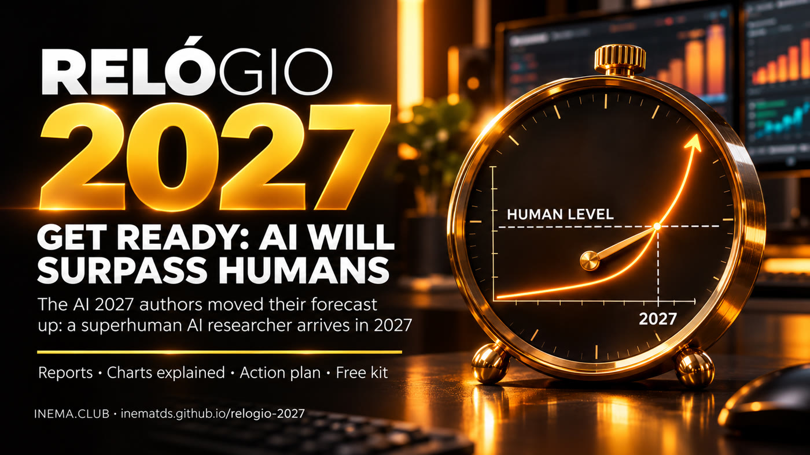
In April 2025, a group of researchers published AI 2027, a forecast of how AI could surpass humans by 2027. In November 2026, they checked it against reality: we’re about 5 months ahead, and everyone now expects AI researchers better than any human by 2027. This guide explains both reports in plain English, shows the charts, and ends with an action plan. At the end, in a separate section, there’s a free kit for anyone who wants to rerun the calculations on their computer.
What the AI 2027 authors measured, the new dates and how to measure your own ladder with this kit, in five minutes (in Portuguese).
Everything in this kit comes from two public pieces written by the same group of researchers (AI Futures Project, led by Daniel Kokotajlo). Both are in English; below, we explain each chart in plain English.
These charts are from ai-2027.com, created in April 2025. We’ve overlaid each one with markers showing what the November 2026 update says now. The markers are numbered; the legend is below the image.
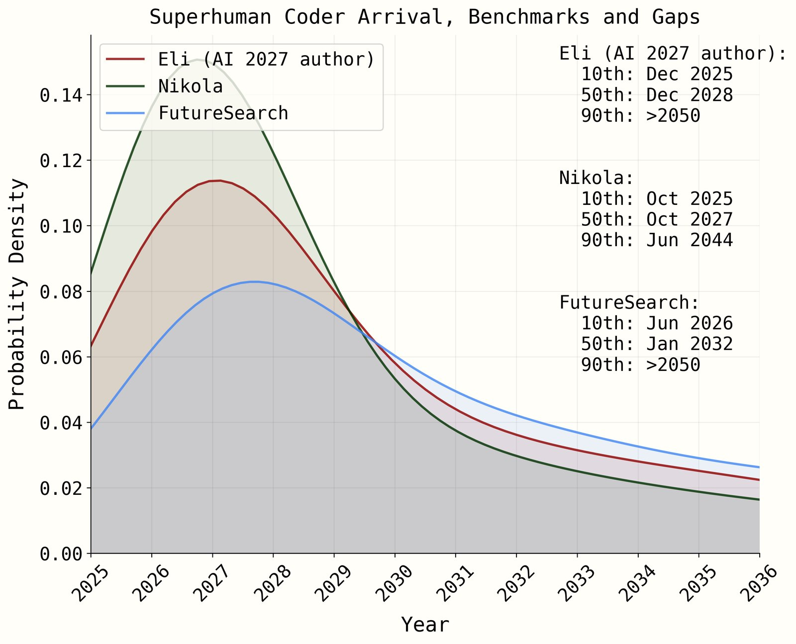
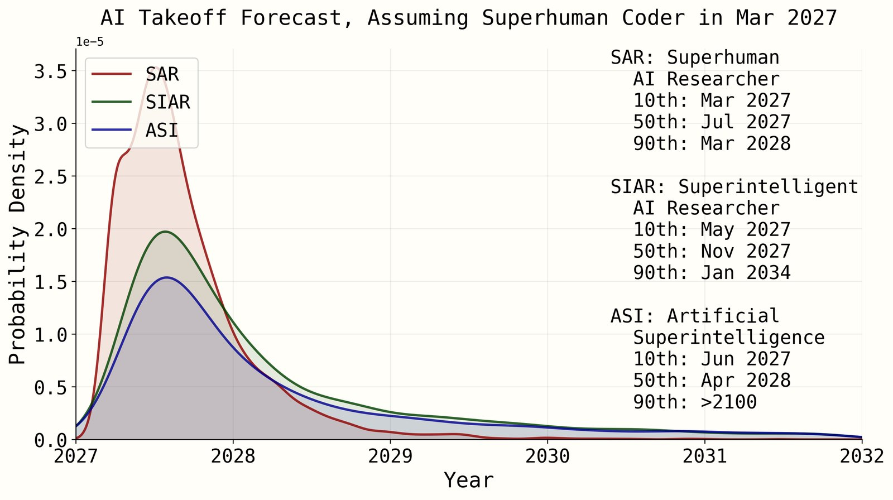
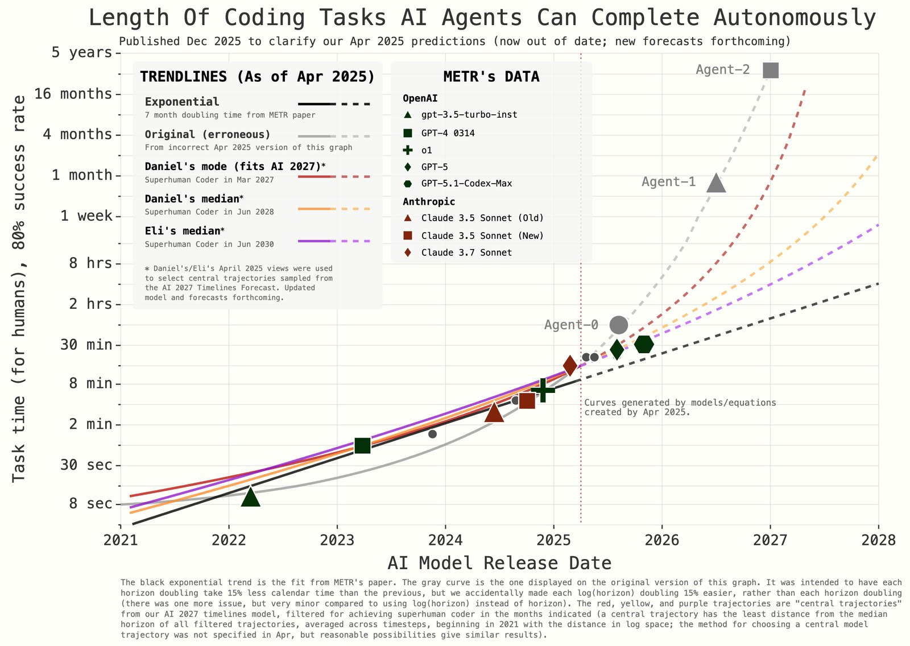
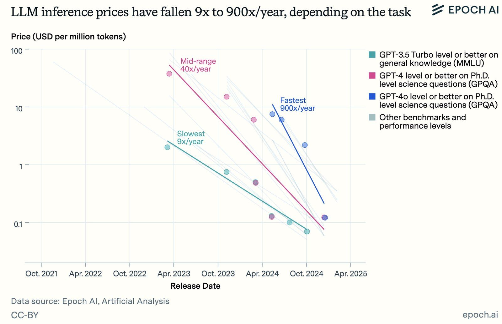
These are the original charts (so they’re in English). Below each one: what it shows and what it means in real life. Click an image to enlarge it.
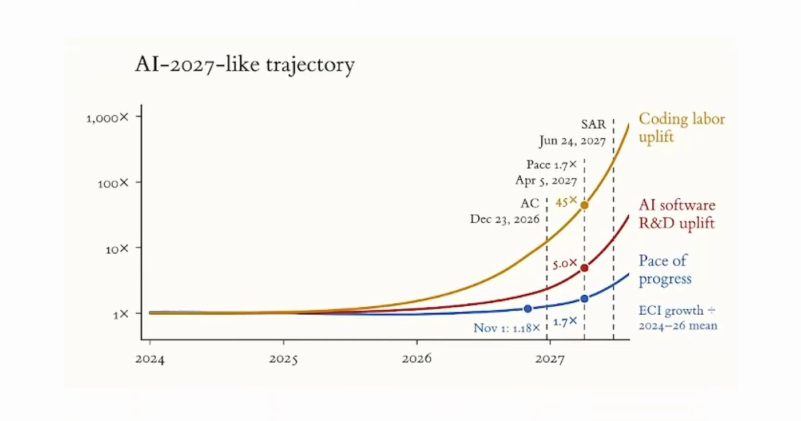
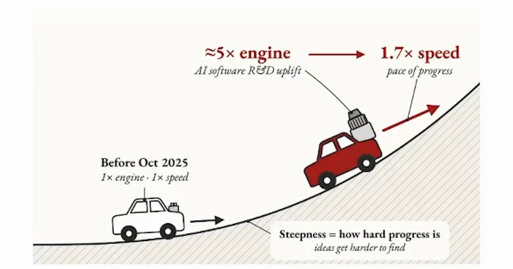
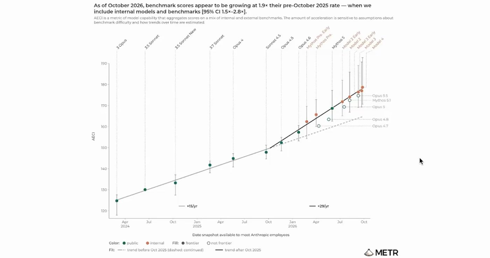
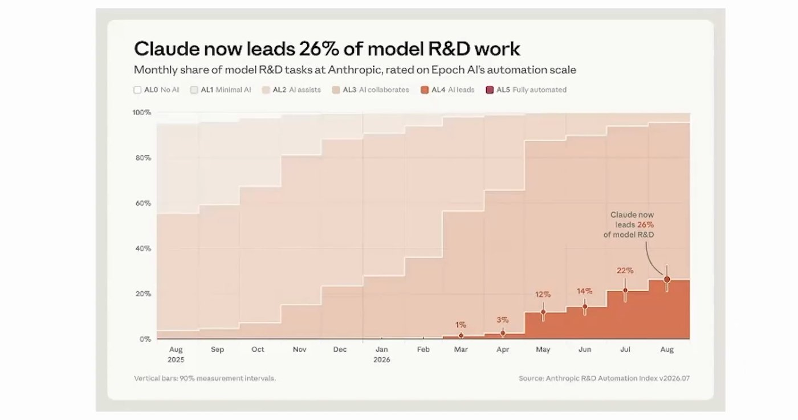
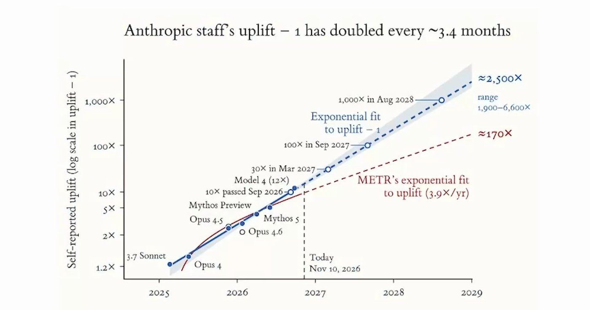
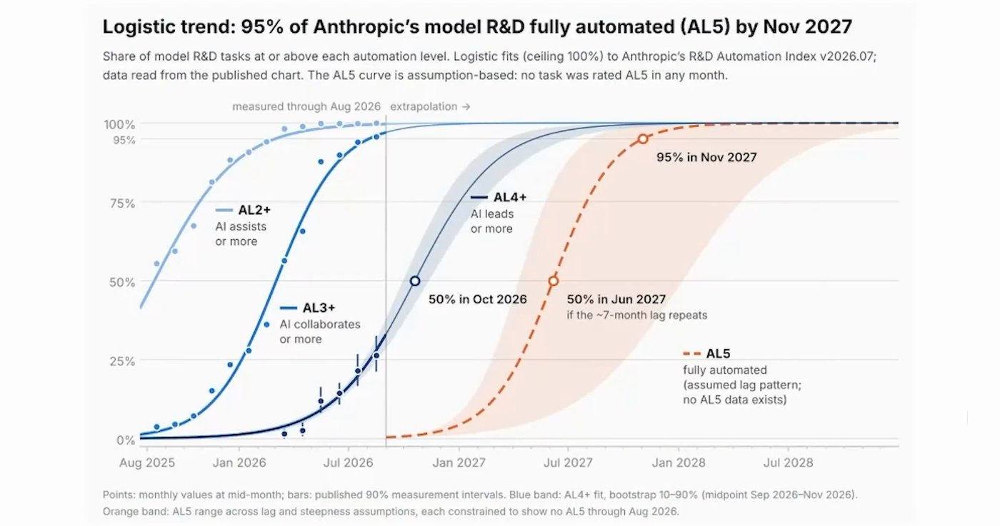
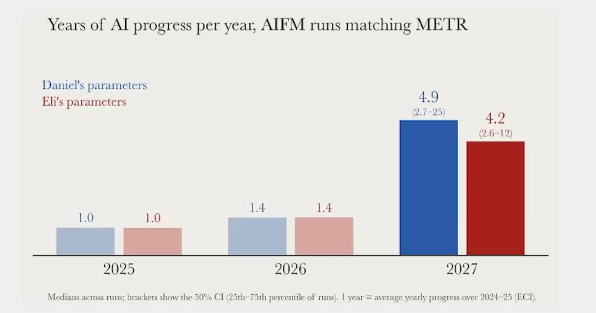
Think of a trip. The GPS (the AI 2027 scenario) said you’d reach each city on a certain date. Now, looking at the actual road, the authors recalculated and saw that we’re arriving earlier.
Comparisons using the numbers from the 10/11/2026 update. Solid bar = measured or forecast; striped bar = projection (extrapolated trend). Hover to see the value.
Months from November 2026.
What it means: in August 2026, the most optimistic forecast (by Daniel) for an AI researcher better than any human was December 2028. Three months later, it moved to May 2027: the date shifted 19 months closer. And the 1.7x acceleration, which the scenario only reached in April 2027, was measured now, in November 2026: 5 months earlier.
Share of Anthropic's model research led by AI (2026) and the fully automated projection (2027).
What it means: each bar is the share of Anthropic’s research where Claude leads the work and the person only reviews it. It rose month by month: 1% in March, 12% in May, 14% in June, 22% in July, and 26% in August 2026. The two striped bars extend the curve: 50% of research fully automated in June 2027 and 95% in November 2027.
How many times faster researchers work with AI (logarithmic scale: each step is 10x).
What it means: “12x” is how much faster an Anthropic researcher says they work with AI (September 2026). This number doubles every ~3.4 months. If it continues: 30x in March 2027, 100x in September 2027, and 1,000x in August 2028. The bars use a “powers of 10” scale (1x, 10x, 100x, 1,000x); otherwise the smaller ones would not appear.
Years of AI progress per calendar year (1 = 2024–2025 average).
What it means: 1.0 is how much AI advanced in a normal year (2024–2025 average). In 2026 it was 1.4: one year delivered one year and four months of progress. For 2027, the estimate is 4.2 to 4.9 years of progress in 12 months, because AI begins accelerating its own research.
Putting it all together: what to do with this information. First, what the outlook was before the update, then what it looks like now that AI is accelerating. This section is INEMA’s analysis based on the reports’ figures.
Both clocks run together, but the lower one runs 1.7x faster. The result: the date when AI begins doing research better than the best humans has moved more than a year closer, and the time to adapt has fallen from about 2 years to 6 to 12 months.
It still works if the forecast is wrong: if AI moves more slowly, you’ve only gained time and skills. It’s a “no-regrets” plan.
From here on, this is the technical section: installing, running the scripts, and viewing the numbers they use. You don’t need this section to understand what’s above.
On 2026-11-10, the AI Futures Project (read the update) reported that AI-driven acceleration is already about 5 months ahead of the AI 2027 scenario. This kit brings that calculation into your daily life.
projecao.py recalculates two simple extrapolations: researcher output that doubles every ~3.4 months and the fully automated research curve (AL5). You can change the doubling time, starting point, and scenario.
minha-escada.py reads your tasks (hours per week, AL1–AL5 level, critical or not), calculates how much AI already leads, compares it with Anthropic's 26%, and writes a relatorio.md with what to move up and what to review.
sinais.py compares the indicators you record each month (METR, Anthropic automation, revenue, benchmarks) and shows whether the clock moved ahead ↑ or fell behind ↓.
Public figures are entered as constants, with their sources noted in the code. You change the assumptions and your tasks; the kit does the math.
| Level | Meaning |
|---|---|
| AL1 | You do it yourself |
| AL2 | AI helps |
| AL3 | AI collaborates |
| AL4 | AI leads and you review |
| AL5 | Fully automated |
No packages to install, no keys, no connection required. Works on Linux, Mac, and Windows. On Windows: install Python from python.org, open the kit folder in File Explorer, right-click and choose “Open in Terminal” (PowerShell), and replace python3 with py in all commands.
Check the version. If you see “not recognized,” install it from python.org.
# should show 3.x python3 --version
With git, clone the repository. Without git, download the ZIP, unzip it, and open a terminal in the relogio-2027-main folder.
git clone https://github.com/inematds/relogio-2027 cd relogio-2027
To edit CSVs: use any text editor, Excel, or LibreOffice. You can save as Excel's regular “CSV”: the kit accepts commas or semicolons, and numbers with a comma (2,5).
This is extrapolation, not prophecy: the dates are conditional calculations, not guaranteed deadlines.
Run the baseline projection, then a slower scenario to see how much the dates change. “30x” means the researcher with AI produces 30 times what they would without AI (a gain they themselves report); “doubling” is how many months that gain takes to double.
python3 kit/scripts/projecao.py # 30x ~Feb/2027 · 100x ~Aug/2027 · 1,000x ~Aug/2028 · 95% AL5 ~Nov/2027 python3 kit/scripts/projecao.py --cenario lento python3 kit/scripts/projecao.py --dobra-meses 5 --ganho-hoje 8 # your own assumptions
Open kit/exemplos/minhas-tarefas.csv and replace the examples with your tasks: task, hours per week, level (AL1 to AL5), and whether it is critical (s/n). Do not count the same hour twice.
The column names and values stay in Portuguese: tarefa = task, horas_semana = hours per week, nivel = level, critico = critical (s = yes, n = no). The column names must NOT be translated. What the scripts print and relatorio.md are in Portuguese.
tarefa,horas_semana,nivel,critico Rascunhar textos,8,AL3,n Resumir reuniões,4,AL4,n
The script shows the share of hours where AI already leads (AL4+AL5), the projection, and the three tasks to move up one level this month. Critical tasks go on the human review list. If you run it without replacing the example, the result is for the example, not for you; to use your own file without changing the example, pass --csv.
python3 kit/scripts/minha-escada.py # saves kit/relatorio.md cp kit/exemplos/minhas-tarefas.csv minhas.csv # creates your copy (Windows: copy) python3 kit/scripts/minha-escada.py --csv minhas.csv # uses your copy python3 kit/scripts/minha-escada.py --saida kit/relatorio-dez.md # saves another version
In kit/exemplos/sinais.csv, the sample values are fictional: replace them with numbers you collect (month, indicator, value), always using the same unit and exactly the same indicator name each month. The script does not fetch anything from the internet.
mes,indicador,valor 2026-11,Anthropic parcela AL4 em porcentagem,26 python3 kit/scripts/sinais.py # ↑ moved ahead · ↓ fell behind · average doubling time in months
In kit/prompts/ there are three prompts to paste into any AI: classify your tasks from AL1–AL5, create a 30-day plan to move up one level, and decide what to keep under human review. Do not paste sensitive data.
# open in Notepad (or any editor) and copy the text: kit/prompts/01-classifique.md
22 tests check the dates against the report (one-month tolerance), the example, and the error messages.
python3 kit/testes/run.py # Ran 22 tests … OK
All are public, from the AI Futures Project update on 2026-11-10 and the METR assessment of Anthropic. METR is an independent group that measures what AIs can do; AL4 means AI leads the task and the person only reviews.
| Indicator | Value |
|---|---|
| Anthropic progress acceleration (METR) | ~2x (range 1.3x to 3x) |
| Share of that acceleration caused by AI | ~80% → 1.7x |
| Lead over the AI 2027 scenario | ~5 months |
| Model research led by Claude (AL4) | 1% in Mar/2026 → 26% in Aug/2026 |
| Researchers' self-reported gain | ~12x in Sep/2026, doubling every ~3.4 months |
| Fully automated research (AL5, extrapolation) | 50% ~Jun/2027 · 95% ~Nov/2027 |
| Superhuman AI researcher | likely in 2027 (all authors) |
Works with other INEMA kits: negocios-com-ia · esforco-certo · audite-seu-claude · agente-que-aprende · caixa-do-agente · agente-blindado.
The kit is intentionally small. What could come next: